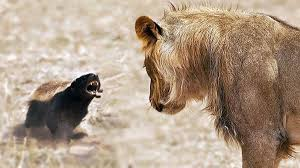

General Information
There are a lot of things that people tend not to know about the honey badger. One of those is the fact that honey badgers have been known to take on predators many times their size such as hyenas and lions. They also not afraid to attack the porcupine who has sharp quills that don't affect the honey badger. They have a unique trait that helps them survive even venomous animals, for example if a honey badger gets bitten by a venomous snake they simply lay down and go into a coma for a couple hours before enjoying their meal.
The male honey badger can weigh anywhere from 20 to 35 pounds while females weigh anywhere from 11 to 22 pounds and vary between 1.8 and 2.5 feet.
There are many different types of badgers but the most known seems to be the honey badger. I hope you enjoyed the site.